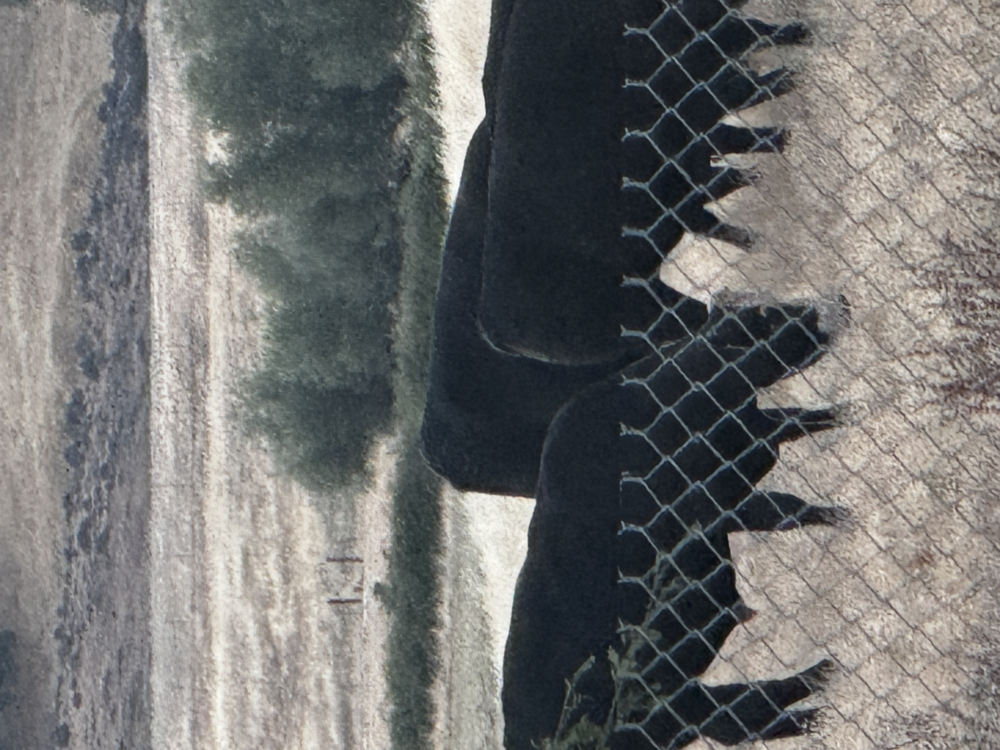

Cattle Program
Our cattle program is focused on strong grass-fed genetics, healthy pasture-raised livestock, and long-term herd quality.
We utilize quality Black Baldy and Angus-influenced cattle selected for sound structure, growth, maternal traits, and adaptability to Northern California conditions.
Middletown Cattle Company is committed to responsible grazing, herd health, and producing premium cattle raised on open pasture.
